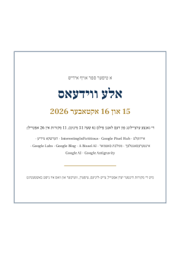

אלע ווידעאס – 15 און 16 אקטאבער 2026
א טיפער ספר אויף אידיש: די גאנצע ערצײלונג פון דעם לאנגן פילם, מיט די מקורות הינטער יעדן אפטייל, צייט-ליניעס, ציפערן, ווערטער, און וואס איז נישט באשטעטיגט.
701 זייטן · 11 מקורות · 26 אפטיילן · PDF (11.4 MB)
⬇ אראפלאדן דעם PDFעפענען אינעם בלעטערעראינהאלט
- 1אייוועלט: כינוס סאטמאר יובל השמונים – בארקלעיס5
- טײל 1 פון 36
- טײל 2 פון 328
- טײל 3 פון 348
- 2Google Pixel Hub75
- טײל 1 פון 376
- טײל 2 פון 389
- טײל 3 פון 3104
- 3InterestingInFictitious122
- 4הערשקא מידיע (HershkoMedia)133
- טײל 1 פון 2134
- טײל 2 פון 2158
- 5אינטערעסאנטלעך (Intersantlech)181
- 6ממלכת סאטמאר (satmarnewss)198
- טײל 1 פון 3199
- טײל 2 פון 3226
- טײל 3 פון 3255
- 7A Bissel AI280
- 8Google Blog – blog.google300
- טײל 1 פון 9: פונעם אנהויב ביז 2016301
- טײל 2 פון 9: 2017323
- טײל 3 פון 9: 2018342
- טײל 4 פון 9: 2019365
- טײל 5 פון 9: 2020386
- טײל 6 פון 9: 2021407
- טײל 7 פון 9: 2022427
- טײל 8 פון 9: 2023–2024446
- טײל 9 פון 9: 2025–2026472
- 9Google Labs – labs.google498
- 10Google Antigravity – antigravity.google532
- 11Google AI – ai.google657